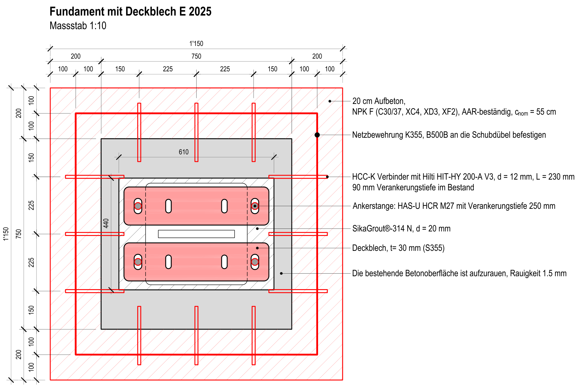
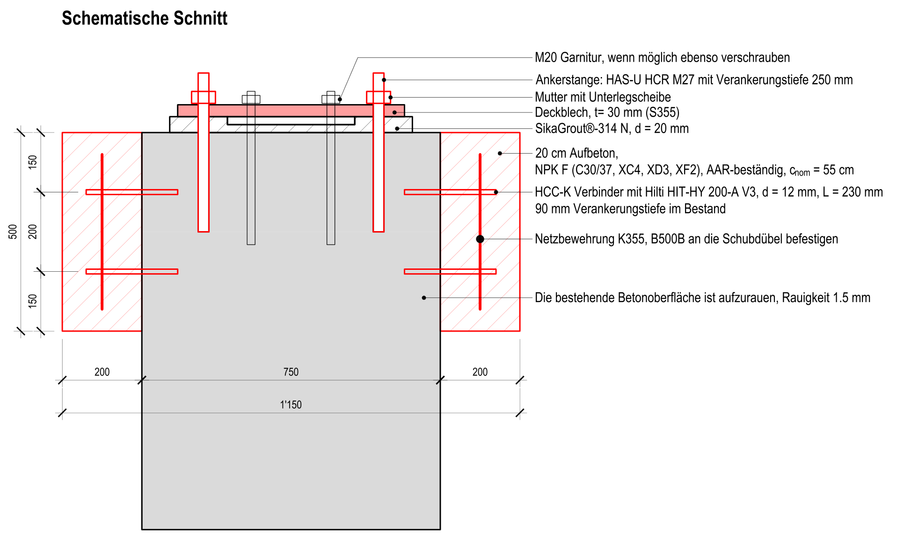
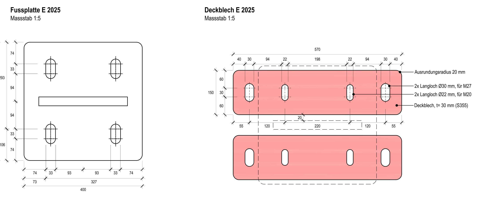

Fundamente – je 2 Deckbleche = 30 Bleche
Zwei Deckbleche auf die Fussplatte, mit 4 Ankern M27 in den Beton, dann untergiessen. 7 bergseitige bekommen zusätzlich 20 cm Aufbeton rundherum.
🚚 Lieferung Mo 02.11.2026 – IP Tal 1
30 Deckbleche von Debrunner, zusammen 616 kg (je Blech 20.5 kg). LKW OHNE Kran – Abladen vorbereiten. Der Fahrer ruft 1 Stunde vorher bei Victor an.
⚠ Anker M27 erst bohren, wenn das Blech liegt
Das Blech ist die Bohrschablone. Durch die Langlöcher bohren – sonst passen die Löcher nicht.
Talseitig: nichts anfangen, bevor die Bleche da sind.
Ablauf je Fundament
- M20-Löcher ins Blech bohren. Die Bleche kommen ohne die 2 mittleren Löcher. Am Fundament den Abstand der 2 M20-Gewinde messen (ein Paar je Blech), aufs Blech übertragen, Ø 22 mm bohren – Magnetbohrer.
- Bleche auflegen: zwei Bleche parallel auf die Fussplatte, je eins über ein M20-Paar (Reiter 📐 Plan). Die äusseren Langlöcher liegen neben der Fussplatte über dem Beton.
- Anker M27 bohren – durch die Langlöcher. Bohrloch reinigen und HAS-U M27 mit Hilti HIT-HY 200-A einkleben, nach der Hilti-Setzanleitung. Aushärtezeit abwarten (steht auf der Kartusche).
- Höhe: Stütze mit den Muttern unter der Fussplatte auf Höhe stellen. Muttern zu klein → Schiftbleche unterlegen, die werden mit vergossen.
- Untergiessen mit SikaGrout-314 N (oder gleichwertig): bis Unterkante Fussplatte, auch die Langlöcher der Fussplatte füllen. Keine Luftblasen unter der Fussplatte.
- Verschrauben: M27 mit Mutter und Unterlegscheibe. Die M20 auch, wenn das Gewinde lang genug ist.
Bergseitig zusätzlich: 20 cm Aufbeton
- Betonfläche 50 cm hoch aufrauen (ca. 1.5 mm) – leicht aufspitzen mit dem Hilti-Bohrhammer.
- Schubverbinder HCC-K Ø 12, L 230 mm mit HIT-HY 200-A einkleben, 90 mm tief im Bestand (ca. 24 je Fundament).
- Netz K355 an die Schubverbinder binden.
- Beton NPK F (C30/37, XC4, XD3, XF2), AAR-beständig, Überdeckung 55 mm.
Material
- 30 Deckbleche – Debrunner, kommen am 02.11. auf IP Tal 1.
- 60 Ankerstangen HAS-U M27 mit Mutter + Scheibe (4 je Fundament) – Hilti.
- Hilti HIT-HY 200-A · SikaGrout-314 N · Magnetbohrer mit Bohrer Ø 22.
- Bergseitig: HCC-K 12 × 230, Netz K355, Beton NPK F.
Noch offen – vor dem ersten Fundament mit François klären
- Setztiefe M27: der Plan sagt 250 mm (gerechnet mit einer Stange ≥ 400 mm). Bestellt sind HAS-U M27 × 340 mm. Setztiefe festlegen, bevor das erste Loch gebohrt wird.
- M27-Muttern: vor oder nach dem Untergiessen anziehen – und mit welchem Moment?
- M20: reicht das Gewinde über 30 mm Blech + Mutter? Der Plan sagt «wenn möglich».
- Verzinkung an den neu gebohrten Ø 22-Löchern ausbessern?
Quelle
Baustellenanweisung NalpSolar_51_BA_0272_A1_MT-S-Fund-Garnitur_260910
«Anpassung Betongarnitur Einzelfundamente Typ D/E», ILF, 10.09.2026 (10 Fundamente, Plan S. 3).
Mail François Borner 09.10.2026: 5 Fundamente zusätzlich (2192 S3, 2094 S2/S3, 2024 S1/S4),
nur noch ein Blechtyp, Anker erst mit dem Blech als Schablone, talseitig auf die Bleche warten.
Liefertermin: Auftragsbestätigung Debrunner vom 21.10.2026. Lage = Nalpi-Bohrpunkt des Beins.
Draufsicht: so liegen die 2 Bleche

Schnitt

Das Blech
